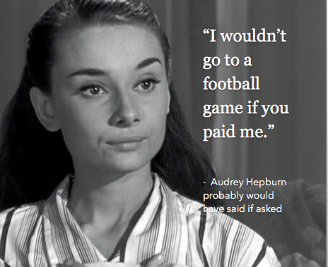

Tue Jan 19
St. Louis, please don't worry about losing your football team to Los Angeles. Some of the best cities in the world don't have a football team. Think of Paris, Amsterdam, Aspen, Montreal. (On the flip side, think of Baltimore, Dallas, Detroit.)
A lot of people don't even like football. This is an opportunity to meet them! Throw a literary festival, become a tech hub, have a graffiti competition. There are so many ways to create your new identity.
I know it feels bleak now. But you have new friends waiting to meet you, St. Louis. And they will come, not in spite of, but because you are a football-free city.
Mon Jan 18
Back in school, if you had to read The Iliad you might have overlooked some odd passages regarding the color of things: where it says the sky is bronze, the sea is the color of wine, and sheep are violet. Something got lost in translation, right?
Not necessarily. Most ancient texts, including the New Testament, use colors in ways you and I never would. Why is that? One theory is that different cultures actually see color differently. And it all depends on if there is a word for a particular color in the native language. If your brain doesn't have a word for, say, blue - like the ancients didn't - it won't detect it, substituting in a color for which it does.
Convincing evidence was videoed in the Himba Color Experment. A tribe in Namibia has no word for blue but several for green and the Himba volunteers couldn't pick out a blue swatch among a bunch of green swatches.
It's not conclusive but very tempting. I mean, who wouldn't want to live in a word with violet sheep?